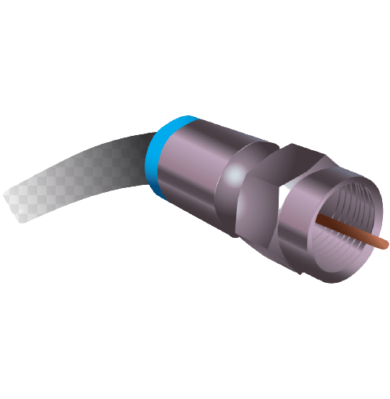
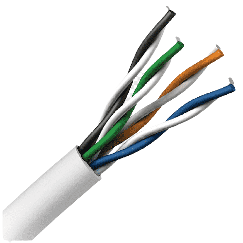
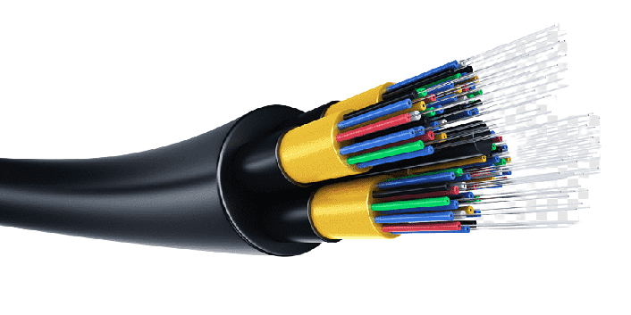
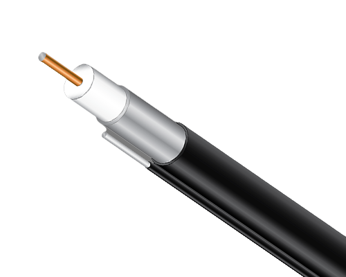
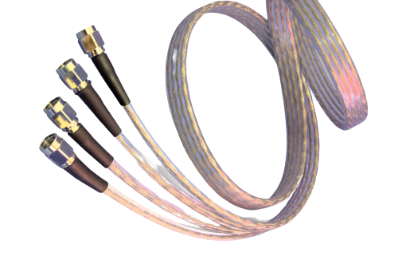
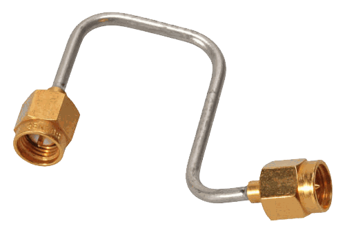
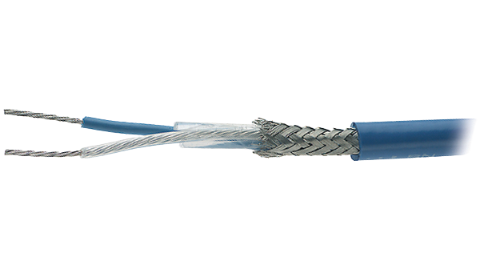
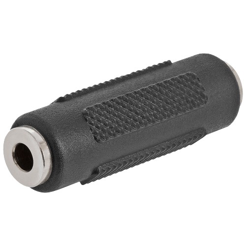

| Primary Cable Type | |||||
|---|---|---|---|---|---|
| Coaxial | Twisted Pair | Fiber Optics | |||
|  |  |  | |||
Coaxial Cable
Coaxial cable is a type of copper cable specially built with a metal shield and other components engineered to block signal interference. It is primarily used by cable TV companies to connect their satellite antenna facilities to customer homes and businesses. It is also sometimes used by telephone companies to connect central offices to telephone poles near customers.
Coaxial cable was invented in 1880 by English engineer and mathematician Oliver Heaviside, who patented the invention and design that same year. AT&T established its first cross-continental coaxial transmission system in 1940.
Types of Coaxial Cable
| Hard Line Coaxial Cable  |
Hard line coaxial cable makes use of a center conductor that is constructed out of materials such as copper, silver, aluminum, or steel and this type of cable is typically larger in diameter than other forms of coaxial cable. |
|---|---|
| Flexible Coaxial Cable  |
can move and flex as needed to suit the configuration and geometry of the application. A typical design for flexible coaxial cable utilizes a metal inner conductor surrounded by a flexible polymer that functions as the dielectric, with an outer jacket for protection from the environment. |
| Semi-rigid Coaxial Cable  |
makes use of a solid copper outer sheath with a dielectric of PTFE. The copper sheath generally provides superior shielding effectiveness and the dielectric properties offer enhanced high frequency performance. |
Formable Coaxial Cable |
An alternative to semi-rigid coaxial cable is formable coaxial cable, also known as conformable coaxial cable. In place of a rigid copper outer sheath, a flexible metal sheath is used, which can be reshaped and formed by hand the meet the desired cable configuration requiring any specialized tools. |
| Twin Axial Cable  |
are reduced cable loss, greater protection from ground loops and capacitive fields, and a reduction in low-frequency magnetic noise. These cables are best suited for use in low-frequency digital and video applications. |
Coaxial cable is more resistant to interference and attenuation than twisted-pair cabling.attenuation is the loss of signal strength that begins to occur as the signal travels farther along a copper cable.
Twisted-Pair Cable
A twisted pair cable is a type of cable made by putting two separate insulated wires together in a twisted pattern and running them parallel to each other. This type of cable is widely used in different kinds of data and voice infrastructures.
Categories of UTP:
| Category 1 |
Most telephone cable prior to 1983 was Category 1 cable. |
|---|---|
| Category 2 |
Cable for data transmissions up to 4 megabits per second (Mbps) |
| Category 3 |
Cable for data transmissions up to 16 Mbps. |
| Category 4 |
Cable for data transmissions up to 20 Mbps. |
| Category 5 |
Cable for data transmissions up to 100 Mbps. |
| Category 6 |
up to 1000 Mbps (200 MHz) |
Making Twisted-Pair Cable Connections
One of the skills required of a network technician is making a twisted-pair patch cable
| To do this, you need: |
| Wire cutters or electrician’s scissors |
| Wire stripper |
| Crimp tool |
| RJ-45 plugs |
Several components are available to help organize large UTP installations
Rack Shelves  |
Rack shelves can create more room for cables where there isn't much floor space. Using them is a good way to organize a network that has a lot of connections. |
|---|---|
Expandable patch panels  |
These come in various versions that support up to 96 ports and transmission speeds of up to 100 Mbps. |
| Jack couplers  |
These single or double RJ-45 jacks snap into patch panels and wall plates and support data rates of up to 100 Mbps. |
Wall plate |
These support two or more couplers. |
Twisted-Pair Cabling Considerations
Use twisted-pair cable if:
Your LAN is under budget constraints.
You want a relatively easy installation in which computer connections are simple.
Do not use twisted-pair cable if:
Your LAN requires a high level of security and you must be absolutely sure of data integrity.
You must transmit data over long distances at high speeds.
Fiber-Optic Cable
A fiber optic cable is a network cable that contains strands of glass fibers inside an insulated casing. They're designed for long-distance, high-performance data networking, and telecommunications. Compared to wired cables, fiber optic cables provide higher bandwidth and transmit data over longer distances. Fiber optic cables support much of the world's internet, cable television, and telephone systems.
Fiber-Optic Cabling Considerations
Use fiber-optic cable if you:
Need to transmit data at very high speeds over long distances in very secure media.
Do not use fiber-optic cable if you:
Are under a tight budget.
Do not have the expertise available to properly install it and connect devices to it.
Cable Selection Criteria
| Criteria to be considered for a network installation |
|---|
| Bandwidth |
| Budget |
| Capacity |
| Environmental considerations |
| Placement |
| Span |
| Local requirement |
| Existing cable plant |
Bandwidth
The term bandwidth refers to the measure of the capacity of a medium to transmit data. A medium that has a high capacity, for example, has a high bandwidth, whereas a medium that has limited capacity has a low bandwidth
Baseband Transmission
Is a signaling technology that sends digital signals over a single frequency as discrete electrical pulses. The entire bandwidth of a baseband system carries only one data signal and is generally less than the amount of bandwidth available on a broadband transmission system.
Broadband Transmission
Broadband Transmission is a signaling technology that sends signals simultaneously over a range of different frequencies as electromagnetic waves. The bandwidth of a broadband system can usually carry multiple, simultaneous data signals.
Structured Cabling
Structured cabling is defined as building or campus telecommunications cabling infrastructure. Typically, it consists of a number of standardized smaller elements. In a structured cabling system, there is a structure created by a series of patch panels and trunks. It allows for a connection from hardware ports to a patch panel at the top of the rack.
Work Area
Is where computer workstations and other user devices are located
Horizontal Wiring
Horizontal Cabling is any cabling that is used to connect a floor’s wiring closet to wall plates in the work areas to provide local area network (LAN) drops for connecting users’ computers to the network.
Equipment Rooms
houses servers, routers, switches, and other major network equipment, and serves as a connection point for backbone cabling running between TCs
Backbone Cabling
Backbone cabling is the inter-building and intra-building cable connections in structured cabling between entrance facilities, equipment rooms and telecommunications closets. Backbone cabling consists of the transmission media, main and intermediate cross-connects and terminations at these locations. This system is mostly used in data centers.
Entrance Facilities
Is the location of the cabling and equipment that connects a corporate network to a third-party telecommunications provider.Can serve as an equipment room and the main cross-connect for all backbone cabling
The Wireless World
Access in environments where layout and settings change constantly, Ready access to data for mobile professionals
Laser-Based LAN Technologies
, laser-based LAN devices are subject to many of the same limitations as infrared, but aren’t as susceptible to interference from visible light sources
802.11 Wireless Networking
802.11 wireless is an extension to Ethernet using airwaves as the medium; most 802.11 networks incorporate wired Ethernet segments
Fixed WiMax: 802.16-2004
Fixed WiMax can blanket an area up to a mile in radius, compared to just a few hundred feet for 802.11
Summary
Working with network media requires attention to requirements, budget, distance, bandwidth, and environmental factors.Cabled networks typically use one of two transmission schemes: broadband or baseband
For wired networks, the primary choices are twisted-pair and fiber-optic cables Twisted-pair cable can be unshielded or shielded Fiber-optic cable: highest bandwidth, best security and resistance to interference, but the most expensive
Structured cabling facilitates troubleshooting, modifying, and expanding a network cable plant